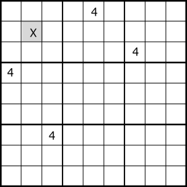

Hidden Single
"In a cell group that makes up House,
if it is the only cell that has a certain digit N as a candidate,
that cell is determined to be the digit N".
In the example on the left, set X=4.
Example

The digits displayed in red of each cell is unique in one of row/column/block house, and it is determined.
...6.83....7..45..6..73.428.6.....13..4...6.....3..2.7518.2..3.4.3..6...296...7..
Hidden Single C# program
public class SimpleSingleGen: AnalyzerBaseV2{
public bool HiddenSingle( ){
bool SolFond=false;
for( int no=0; no<9; no++ ){
int noB=1<<no;
for( int tfx=0; tfx<27; tfx++ ){
if( pBDL.IEGetCellInHouse(tfx,noB).Count()==1 ){
SolFond=true;
var P=pBDL.IEGetCellInHouse(tfx,noB).First();
if(P.FreeBC==1) continue;
P.FixedNo=no+1;
if( !MltSolOn ) goto LFond;
}
}
}
LFond:
if(SolFond){
.
. (Solution report code)
.
return true;
}
return false;
}
}